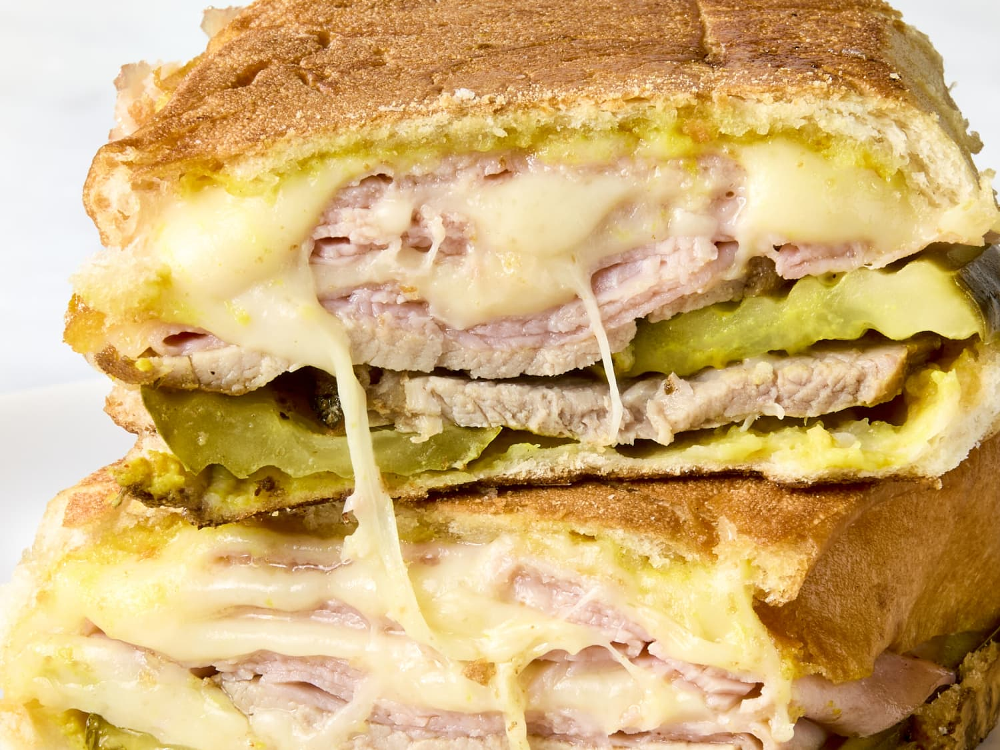

Back to Home
The BEST Cuban Sandwich you'll EVER have!

Description
The Cuban sandwich is a classic sandwich that is perfect for lunch or dinner. It is made with ham, roasted pork, Swiss cheese, pickles, mustard, and Cuban bread. It is a delicious and satisfying sandwich that is sure to be a hit with your friends and family.
Ingredients
- 1 loaf Cuban bread, cut in half lengthwise
- 1/4 cup yellow mustard
- 1/2 pound ham, thinly sliced
- 1/2 pound roasted pork, thinly sliced
- 1/4 pound Swiss cheese, thinly sliced
- 1/2 cup dill pickles, thinly sliced
- Butter, for grilling
Steps
- Preheat a panini press or a large skillet over medium heat.
- Spread mustard on the bottom half of the Cuban bread.
- Layer the ham, roasted pork, Swiss cheese, and pickles on top of the mustard.
- Place the top half of the Cuban bread on top of the sandwich.
- Butter the outside of the Cuban bread.
- Place the sandwich in the panini press or skillet and cook until the bread is golden brown and the cheese is melted, about 5 minutes.
- Remove from the panini press or skillet and let cool for a few minutes before
slicing.
- Serve and enjoy!